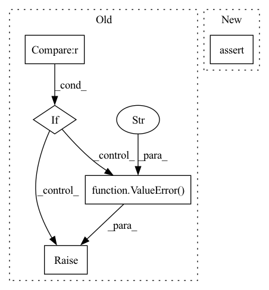

Pattern ID :179
Before Change
if noise_schedule == "linear":
self.log_snr = beta_linear_log_snr
elif noise_schedule == "cosine" :
self.log_snr = alpha_cosine_log_snr
else:
raise ValueError(f"unknown noise schedule {noise_schedule}" )
// sampling
self.num_sample_steps = num_sample_stepsAfter Change
// noise schedule
assert not all([*map(exists, (noise_d, noise_d_low, noise_d_high))]), "you must either set noise_d for shifted schedule, or noise_d_low and noise_d_high for shifted and interpolated schedule"
// determine shifting or interpolated schedules
In pattern: SUPERPATTERN
Frequency: 3
Non-data size: 5
Instances Fragment ID: 564153
Project Name: lucidrains/denoising-diffusion-pytorch
Commit Name: 91dea75a73e064840a43fdbd4c483ef7ad9a7e60
Time: 2023-01-31
Author: lucidrains@gmail.com
File Name: denoising_diffusion_pytorch/simple_diffusion.py
Class Name: GaussianDiffusion
Method Name: __init__
Parent Class: nn.Module
Fragment ID: 564157
Project Name: constantinpape/torch-em
Commit Name: 6b3c4ed59bff373d2b2f945e3f1aa300659ce9e9
Time: 2021-12-28
Author: c.pape@gmx.net
File Name: torch_em/loss/spoco_loss.py
Class Name: ContrastiveLossBase
Method Name: __init__
Parent Class: nn.Module
Fragment ID: 564159
Project Name: torchmd/torchmd-net
Commit Name: 4d9bec21d9ceb58fcfe8e20b6ac7c6a6ad34e85b
Time: 2021-07-21
Author: p.thoelke@gmx.de
File Name: torchmdnet/models/torchmd_gn.py
Class Name: TorchMD_GN
Method Name: __init__
Parent Class: nn.Module